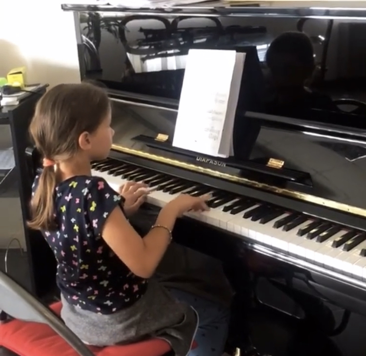

Da quanto tempo esiste questo strumento?
Il pianoforte esiste da oltre 300 anni. Origine del pianoforte: Fu inventato intorno al 1700 a Firenze da Bartolomeo Cristofori, un costruttore di strumenti musicali al servizio dei Medici. Il suo nome originale era “gravicembalo col piano e forte”, perché permetteva di suonare sia piano (dolce) sia forte (intenso), cosa che il clavicembalo non consentiva. Evoluzione nel tempo 1700–1709: primi esemplari costruiti da Cristofori XVIII secolo: diffusione in Europa XIX secolo: importanti miglioramenti tecnici, come la struttura in ghisa e una maggiore potenza sonora Il pianoforte divenne lo strumento centrale nella musica di compositori come Wolfgang Amadeus Mozart, Ludwig van Beethoven e Frédéric Chopin. Se consideriamo il 1700 come data di nascita, nel 2026 il pianoforte ha circa 326 anni.
